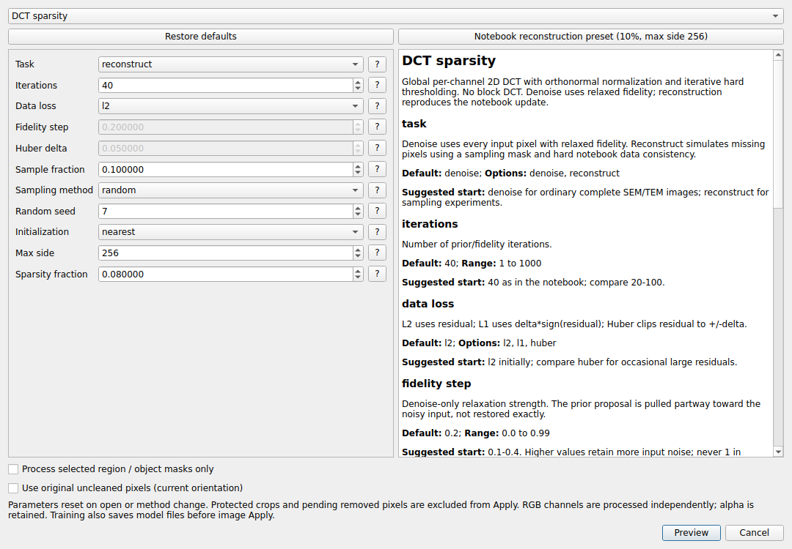

Image restoration and processing#
One Preview → Apply workflow#
Open Processing → Denoise…, select a method, and review its parameters. Choose the whole image or a selected region/object mask, and choose original uncleaned pixels when required. Restore defaults resets the current method; defaults reload when the dialog/method changes. Each parameter’s ? explains its units, bounds/options, and a suggested starting range.
Run Preview, compare acquired and derived pixels, then Apply to commit the image record. Cancel leaves the image unchanged. Final compositing changes only the target; algorithms may use the full image as context.
Choose a denoiser#
Method |
Useful first comparison |
Main limitation |
|---|---|---|
TV restoration / TV Bregman |
Particle boundaries and relatively uniform regions |
Strong regularization can remove texture; the two weight conventions differ. |
Wavelet sparse restoration |
Fast baseline for sparse high-frequency noise |
Thresholding can erase weak structure. |
Non-local means |
Images with repeated local appearance |
Patch/search choices affect speed and fine detail. |
Bilateral / Median |
Edge-aware smoothing / isolated impulse noise |
Small real objects can be smoothed away. |
DCT sparsity |
Global per-channel sparse representation |
Hard coefficient removal can introduce ringing or suppress weak detail. |
TV iterative (notebook) |
Explicit prior/fidelity iteration experiments |
Its iteration step is different from Chambolle’s regularization weight. |
Sparse dictionary learning |
Repeated patches, particles, or textures |
Learned dictionaries can also fit noise and alter lattice contrast. |
BM3D |
A single-image, non-training comparison |
Gaussian-noise assumptions and upstream license terms apply. |
Noise2Void / N2V2 |
Self-supervised blind-spot training or saved-model prediction |
Correlated microscope noise can violate assumptions; training loss is not scientific validation. |
The complete denoising parameter reference lists every exposed control, default, allowable range, and recommended comparison. No method or default is guaranteed to preserve all specimen features.
Denoising versus compressed-sensing reconstruction#
Denoise uses every input pixel and relaxed fidelity. Reconstruct simulates missing pixels and follows the notebook’s sampled-data updates. Hard L2 consistency with every pixel sampled returns the input, so it is not a useful denoising setting.
Notebook reconstruction preset (10%, max side 256) selects random 10% sampling, seed 7, nearest initialization, and 40 L2 iterations. DCT retains about 8% of full-image coefficients. Notebook TV uses step 0.08; denoising’s ordinary iterative TV default is 0.01. A resolution cap downsamples for processing and interpolates back, whereas normal processing uses the native grid.
Smooth pixels and add noise#
Processing → Smooth (Gaussian)… exposes an odd kernel size and sigma. Add noise… supports Gaussian sigma, Poisson peak counts, and salt-and-pepper amount, each with an explicit seed. Keep the seed fixed when comparing restoration methods. Synthetic Poisson counts are not detector calibration.
Retain a crop while processing its surroundings#
Select area objects or draw a region.
Choose Crop selected region / masks… and name the crop.
The app retains its mask bounding rectangle plus 3 pixels of real context per side, clipped at image edges. Irregular corners contain actual background.
Process the remaining image while the retained rectangle is protected.
Open Retained crops / paste back…, select the snapshot, and use Paste back. Choose mask pixels only or the complete rectangle/background.
The crop dialog also offers Protect / release, Export TIFF, and Remove snapshot. A retained crop is a saved pixel snapshot; it does not delete the source image. Review paste-back edges before committing later edits.
Neural models and image history#
CAREamics training saves model files before image Apply. Canceling a preview or undoing the image record does not remove trained models. RGB channels have separate models. For GPU training/prediction, use the dedicated Conda environment and a compatible checkpoint. An initial one-epoch trial checks execution only.

